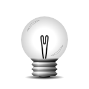
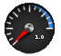

Följande Moduler finns med i grundinstallationen av Bodhi Linux.
Utilities (Verktyg) |
| Modul | Gadget | Beskrivning |
| Backlight |  | Skjutreglage för att justera skärmens bakgrundsbelysning |
| Calendar |  | Kalender som visar "idag", mouseover för månad |
| Clock |  | Analog klocka |
| Engage |  | Docka som stödjer compositing och ingen compositing för Enlightenment skrivbord |
| IBar | | Ikonbaserad applikations startare (docka) |
| IBox | | Ett hem för dina applications-ikoner |
Pager |  | Gadget som låter dig se dina Virtuella Skrivbord och fönstrena däri |
| Shot |  | Enkel skärmdump+spara/ladda upp modul. Syns i Huvudmenyn |
| Start |  | E17's motsvarighet till "Start" knapp |
| Systray |  | Systemfält som kan hålla applikationsikoner som Skype, Pidgin, Kopete mm. |
| TClock |  | Digital klocka |
| Taskbar | | Gadget som tillhandahåller ett aktivitetsfält som visar applikationer som körs |
System |
| Battery |  | En Gadget som visar batteristatus |
| Bluetooth Manager |  | Hantera bluetooth enheter |
| Connection Manager |  | Styr wifi, fast och mobila anslutningar |
| CPUfreq |  | Gadget för att övervaka och ändra CPU-frekvens |
| DBus Extension |  | |
| Mixer |  | En modul som tillhandahåller en mixer/volymkontroll |
| Mobile Modems Manager |  | Styr mobila modem |
| Places |  | Visa dina lagringsenheter, mounta & mata ut enheter |
| Temperature |  | Temperatur-övervakning |
Look (utseende) |
| Composite |  | Enlightenment Composite hanterare |
| DropShadow | | Modul för att lägga till skuggning bakom fönster |
| Penguins | | Modul för att visa stiliga pingviner som vandrar över ditt skrivbord |
| Scale Windows | | Skala ner fönstren för att visa dem sida vid sida |
Files (filer) |
| EFM (Starter) | | Enlightenment's integrerade filhanterare |
| EFM Operation Info | | EFM driftinformation. Kan placeras på skrivbordet eller i en hylla |
Launcher (programstartare) |
| Everything (starter) | | Kör kommando modulen, tillhandahåller en interaktiv applikationsstarare |
Core (kärnfunktioner) |
| Bodhi Close | | Gadget som ger snabb-tillgång till att stänga den aktuella applikationen |
| Bodhi Shutdown | | Gadget som ger snabb-tillgång till stäng ner menyn |
| Gadgets |  | Modul för att hantera Gadgets på skrivbordet |
| Settings Panel | | Generell Enlightenment konfigurationspanel |
| System Controls | | Denna modul ger en standardiserad popup dialogruta för all system-åtgärdspunkter i Enlightenment |
| Window Switcher List | | En modul som visar listan på klientapplikationer som är igång |
Mobile (mobilt) |
| Elfe | | Startare för surf-platte-profilen |
| Illume | | Denna modul anpassar Enlightenment för att användas på inbyggda pekskärmar som t.ex. mobiltelefoner och surfplattor där fönstret alltid är fullskärm. Med förenklade applikationsstartare och hanterare |
| Illume-Winlist | | Gadget som tillhandahåller en fönster-växlingslista för Illume |
| Illume-Bluetooth | | |
| Illume-Home | | Hem |
| Illume-Home-Toggle | | Växla Hem |
| Illume-Indicator | | Indikator |
| Illume-Keyboard | | Tangentbord |
| Illume-Keyboard-Toggle | | Växla tangentbord |
| Illume-Model-Toggle | | |
| Illume-Softkey | | |
| Illume2 | | |
Settings |
| Applications | | Medger konfigurering av Ibar, Restart, och Startup Applicationerna |
| Dialogs | | Anpassa standard dialogrutans egenskaper |
| Edge Bindings | | Anpassa dina kantbindnings inställningar här |
| Input Control Settings | | Tangent, mus och knapp inställningar |
| Interaction | | Anpassa mus och pekplatte-inställningar |
| Language | | Används för att ställa in önskat språkval |
| Menu Settings | | Anpassar Menyernas beteende |
| Performance | | Används för att justera vissa prestanda relaterade artiklar så som bildfrekvens och cache inställningar |
| Screen | | Används för att ändra skärminställningar |
| Search Directories | | Specificerar E17's sökvägar och standardmappar |
| Shelves | | Dialogruta för inställning av Hyllor |
| Theme | | Används för att anpassa inställningarna för teman |
| Wallpaper 2 | | Används för att välja bakgrundsbild |
| Window Manipulation | | Ställer in fönster's höj, motstånd och maximera beteende |
| Window Remembers | | Tar bort sparade fönster minne |
| Följande moduler finns att installera från Bodhi Linux repositories. |
| DiskIO |  | Modul för att visa diskaktivitet |
| Mem |  | Minnesuppdateringar i realtid på ditt E17 skrivbord |
| News |  | RSS-flöden för ditt skrivbord |
| Moon |  | Se månens nuvarande fas på ditt skrivbord |
| Forecasts |  | Få väderleksuppdateringar på ditt skrivbord |
| Trash | | En sopkorg modul för Enlightenment som använder sig av efreet |
| Mail |  | Kolla e-post på ditt Enlightenment skrivbord |
| CPU | | Modul för att mäta CPU användning |
| Snow | | Utmärkt vintertid, snö och kul på ditt skrivbord |
| Flame | | Elda upp ditt skrivbord |
| Photo | | Modul för att visa bildspel på skrivbordet |
| Everything-Tracker | | Sök filer med tracker (0.8), som även har en musikutforskare |
| Everything-MPRIS | | Hantera spellistor för MPRIS medvetna musikspelare (Amarok, Audacious, xmms2, ...) |
| Everything-Places | | Modul för att utöka Run Everything |
| Everything-Websearch | | "Sluför det jag skriver automatiskt" med förslag från "Google suggests" och Wikipedia (fler kommer) |
| Everything-Wallpaper | | Modul för att utöka Run Everything |
| Everything-Pidgin | | Öppna chattfönster eller skicka filer till kompisar med Pidgin |
| Ecomorph | | Compiz port för E17 |
| EFM-pathbar | | Utbyggnad av EFM filhanteraren |
| EFM-nav | | Utbyggnad av EFM filhanteraren |
| EFM-path | | Utbyggnad av EFM filhanteraren |
| Exalt-client | | Exalt-klient Enlightenment modul |
| Slideshow | | Enlightenment bildspels-modul |

{kind=link}
{kind=link}
{kind=link}
{kind=link}
{kind=link}
{kind=link}
{kind=link}
{kind=link}
{kind=link}
{kind=link}
{kind=link}